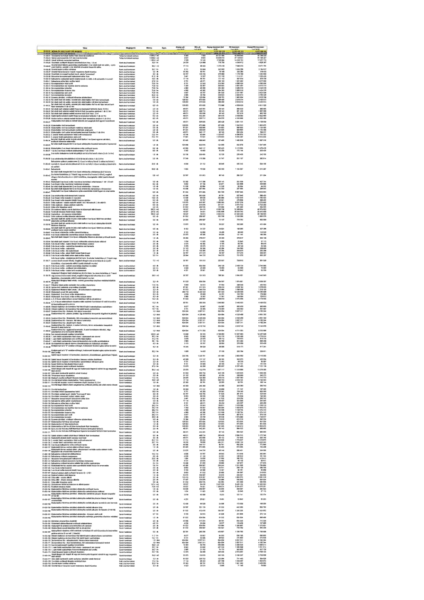

| Tétel | Megjegyzés | Menny. | Egys. | Anyag e.ár (net HUF) | Díj e.ár (net HUF) | Anyag összesen (net HUF) | Díj összesen (net HUF) | Anyag+Díj összesen (net HUF) |
|---|---|---|---|---|---|---|---|---|
| 51-00-01 Aljzatbeton felületek tisztítása | Bank utcai homlokzat | 3 546,0 | m2 | 6 593 | 7 892 | 23 378 778 | 27 984 948 | 51 363 726 |
| 51-00-02 Száraz szemcseszórás 3,01 mm szemcseátmérővel | Bank utcai homlokzat | 5 546,0 | m2 | 2 531 | 8 501 | 14 036 926 | 47 148 321 | 61 185 247 |
| 51-00-03 Ornamensek tisztítása lágy szemcseszórással (max. 1,5 bar) | Bank utcai homlokzat | 1 150,0 | m2 | 2 387 | 12 145 | 2 745 050 | 13 966 725 | 16 711 775 |
| 51-00-04 Ornamensek tisztítása vegyszeres úton (max. 1,5 bar) | Bank utcai homlokzat | 32,4 | fm | 24 035 | 124 966 | 778 734 | 4 048 898 | 4 827 632 |
| 51-00-05 Homlokzati kőfelületek tisztítása vegyszeres úton | Bank utcai homlokzat | 85,2 | m2 | 87 514 | 88 452 | 7 456 193 | 7 536 110 | 14 992 303 |
| 51-00-06 Homlokzati kőfelületek tisztítása gőzzel | Bank utcai homlokzat | 35,7 | fm | 6 731 | 53 849 | 240 300 | 1 922 410 | 2 162 710 |
| 51-00-07 Ornamensek tisztítása mikroszemcse szórással | Bank utcai homlokzat | 25 383 | db | 30 787 | 30 787 | 781 468 421 | 781 468 421 | 1 562 936 842 |
| 51-00-08 Ornamensek tisztítása vegyszeres úton (max. 1,5 bar) | Bank utcai homlokzat | 0,0 | db | 30 787 | 130 785 | 0 | 0 | 0 |
| 51-00-09 Homlokzati kőfelületek tisztítása vegyszeres úton | Bank utcai homlokzat | 61,0 | m2 | 67 314 | 88 452 | 4 106 154 | 5 395 572 | 9 501 726 |
| 51-00-10 Homlokzati kőfelületek tisztítása gőzzel | Bank utcai homlokzat | 10,0 | db | 17 114 | 80 761 | 171 140 | 807 610 | 978 750 |
| 51-00-11 Ornamensek tisztítása mikroszemcse szórással | Bank utcai homlokzat | 3,0 | db | 87 514 | 88 452 | 262 542 | 265 356 | 527 898 |
| 51-00-12 Homlokzati kőfelületek tisztítása vegyszeres úton | Bank utcai homlokzat | 75,8 | fm | 6 731 | 53 849 | 510 210 | 4 081 754 | 4 591 964 |
| 51-00-13 Homlokzati kőfelületek tisztítása gőzzel | Bank utcai homlokzat | 139,0 | db | 30 787 | 130 785 | 4 279 393 | 18 179 115 | 22 458 508 |
| 51-00-14 Ornamensek tisztítása mikroszemcse szórással | Bank utcai homlokzat | 75,8 | fm | 4 808 | 40 080 | 364 446 | 3 038 064 | 3 402 510 |
| 51-00-15 Homlokzati kőfelületek tisztítása vegyszeres úton | Bank utcai homlokzat | 75,8 | fm | 4 808 | 40 080 | 364 446 | 3 038 064 | 3 402 510 |
| 51-00-16 Homlokzati kőfelületek tisztítása gőzzel | Bank utcai homlokzat | 82,0 | db | 2 885 | 35 785 | 236 570 | 2 934 370 | 3 170 940 |
| 51-00-17 Ornamensek tisztítása mikroszemcse szórással | Bank utcai homlokzat | 82,0 | db | 2 885 | 35 785 | 236 570 | 2 934 370 | 3 170 940 |
| 51-00-18 Homlokzati kőfelületek tisztítása vegyszeres úton | Bank utcai homlokzat | 3,0 | db | 128 832 | 673 005 | 386 496 | 2 019 015 | 2 405 511 |
| 51-00-19 Homlokzati kőfelületek tisztítása gőzzel | Bank utcai homlokzat | 3,0 | db | 128 832 | 673 005 | 386 496 | 2 019 015 | 2 405 511 |
| 51-00-20 Ornamensek tisztítása mikroszemcse szórással | Bank utcai homlokzat | 6,0 | db | 128 832 | 673 005 | 772 992 | 4 038 030 | 4 811 022 |
